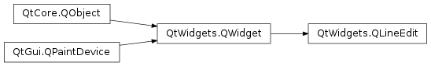

QLineEdit¶
Synopsis¶
Functions¶
- def
addAction(action, position) - def
addAction(icon, position) - def
alignment() - def
backspace() - def
completer() - def
createStandardContextMenu() - def
cursorBackward(mark[, steps=1]) - def
cursorForward(mark[, steps=1]) - def
cursorMoveStyle() - def
cursorPosition() - def
cursorPositionAt(pos) - def
cursorRect() - def
cursorWordBackward(mark) - def
cursorWordForward(mark) - def
del_() - def
deselect() - def
displayText() - def
dragEnabled() - def
echoMode() - def
end(mark) - def
getTextMargins() - def
hasAcceptableInput() - def
hasFrame() - def
hasSelectedText() - def
home(mark) - def
initStyleOption(option) - def
inputMask() - def
inputMethodQuery(property, argument) - def
insert(arg__1) - def
isClearButtonEnabled() - def
isModified() - def
isReadOnly() - def
isRedoAvailable() - def
isUndoAvailable() - def
maxLength() - def
placeholderText() - def
selectedText() - def
selectionEnd() - def
selectionLength() - def
selectionStart() - def
setAlignment(flag) - def
setClearButtonEnabled(enable) - def
setCompleter(completer) - def
setCursorMoveStyle(style) - def
setCursorPosition(arg__1) - def
setDragEnabled(b) - def
setEchoMode(arg__1) - def
setFrame(arg__1) - def
setInputMask(inputMask) - def
setMaxLength(arg__1) - def
setModified(arg__1) - def
setPlaceholderText(arg__1) - def
setReadOnly(arg__1) - def
setSelection(arg__1, arg__2) - def
setTextMargins(left, top, right, bottom) - def
setTextMargins(margins) - def
setValidator(arg__1) - def
text() - def
textMargins() - def
validator()
Slots¶
Signals¶
- def
cursorPositionChanged(arg__1, arg__2) - def
editingFinished() - def
returnPressed() - def
selectionChanged() - def
textChanged(arg__1) - def
textEdited(arg__1)
Detailed Description¶
The
PySide2.QtWidgets.QLineEditwidget is a one-line text editor.
A line edit allows the user to enter and edit a single line of plain text with a useful collection of editing functions, including undo and redo, cut and paste, and drag and drop (see
PySide2.QtWidgets.QLineEdit.setDragEnabled()).By changing the
PySide2.QtWidgets.QLineEdit.echoMode()of a line edit, it can also be used as a “write-only” field, for inputs such as passwords.The length of the text can be constrained to
PySide2.QtWidgets.QLineEdit.maxLength(). The text can be arbitrarily constrained using aPySide2.QtWidgets.QLineEdit.validator()or anPySide2.QtWidgets.QLineEdit.inputMask(), or both. When switching between a validator and an input mask on the same line edit, it is best to clear the validator or input mask to prevent undefined behavior.A related class is
PySide2.QtWidgets.QTextEditwhich allows multi-line, rich text editing.You can change the text with
PySide2.QtWidgets.QLineEdit.setText()orPySide2.QtWidgets.QLineEdit.insert(). The text is retrieved withPySide2.QtWidgets.QLineEdit.text(); the displayed text (which may be different, seeQLineEdit.EchoMode) is retrieved withPySide2.QtWidgets.QLineEdit.displayText(). Text can be selected withPySide2.QtWidgets.QLineEdit.setSelection()orPySide2.QtWidgets.QLineEdit.selectAll(), and the selection can bePySide2.QtWidgets.QLineEdit.cut(),PySide2.QtWidgets.QLineEdit.copy()ied andPySide2.QtWidgets.QLineEdit.paste()d. The text can be aligned withPySide2.QtWidgets.QLineEdit.setAlignment().When the text changes the
PySide2.QtWidgets.QLineEdit.textChanged()signal is emitted; when the text changes other than by callingPySide2.QtWidgets.QLineEdit.setText()thePySide2.QtWidgets.QLineEdit.textEdited()signal is emitted; when the cursor is moved thePySide2.QtWidgets.QLineEdit.cursorPositionChanged()signal is emitted; and when the Return or Enter key is pressed thePySide2.QtWidgets.QLineEdit.returnPressed()signal is emitted.When editing is finished, either because the line edit lost focus or Return/Enter is pressed the
PySide2.QtWidgets.QLineEdit.editingFinished()signal is emitted.Note that if there is a validator set on the line edit, the
PySide2.QtWidgets.QLineEdit.returnPressed()/PySide2.QtWidgets.QLineEdit.editingFinished()signals will only be emitted if the validator returnsQValidator.Acceptable.By default, QLineEdits have a frame as specified by platform style guides; you can turn it off by calling
PySide2.QtWidgets.QLineEdit.setFrame()(false).The default key bindings are described below. The line edit also provides a context menu (usually invoked by a right mouse click) that presents some of these editing options. .. _desc:
Keypress Action Left Arrow Moves the cursor one character to the left. Shift+Left Arrow Moves and selects text one character to the left. Right Arrow Moves the cursor one character to the right. Shift+Right Arrow Moves and selects text one character to the right. Home Moves the cursor to the beginning of the line. End Moves the cursor to the end of the line. Backspace Deletes the character to the left of the cursor. Ctrl+Backspace Deletes the word to the left of the cursor. Delete Deletes the character to the right of the cursor. Ctrl+Delete Deletes the word to the right of the cursor. Ctrl+A Select all. Ctrl+C Copies the selected text to the clipboard. Ctrl+Insert Copies the selected text to the clipboard. Ctrl+K Deletes to the end of the line. Ctrl+V Pastes the clipboard text into line edit. Shift+Insert Pastes the clipboard text into line edit. Ctrl+X Deletes the selected text and copies it to the clipboard. Shift+Delete Deletes the selected text and copies it to the clipboard. Ctrl+Z Undoes the last operation. Ctrl+Y Redoes the last undone operation. Any other key sequence that represents a valid character, will cause the character to be inserted into the line edit.
-
class
PySide2.QtWidgets.QLineEdit([parent=nullptr])¶ -
class
PySide2.QtWidgets.QLineEdit(arg__1[, parent=nullptr]) Parameters: - arg__1 – unicode
- parent –
PySide2.QtWidgets.QWidget
Constructs a line edit with no text.
The maximum text length is set to 32767 characters.
The
parentargument is sent to thePySide2.QtWidgets.QWidgetconstructor.Constructs a line edit containing the text
contents.The cursor position is set to the end of the line and the maximum text length to 32767 characters.
The
parentand argument is sent to thePySide2.QtWidgets.QWidgetconstructor.
-
PySide2.QtWidgets.QLineEdit.ActionPosition¶ This enum type describes how a line edit should display the action widgets to be added.
Constant Description QLineEdit.LeadingPosition The widget is displayed to the left of the text when using layout direction Qt::LeftToRightor to the right when usingQt::RightToLeft, respectively.QLineEdit.TrailingPosition The widget is displayed to the right of the text when using layout direction Qt::LeftToRightor to the left when usingQt::RightToLeft, respectively.
-
PySide2.QtWidgets.QLineEdit.EchoMode¶ This enum type describes how a line edit should display its contents.
Constant Description QLineEdit.Normal Display characters as they are entered. This is the default. QLineEdit.NoEcho Do not display anything. This may be appropriate for passwords where even the length of the password should be kept secret. QLineEdit.Password Display platform-dependent password mask characters instead of the characters actually entered. QLineEdit.PasswordEchoOnEdit Display characters as they are entered while editing otherwise display characters as with Password.
-
PySide2.QtWidgets.QLineEdit.addAction(action, position)¶ Parameters: - action –
PySide2.QtWidgets.QAction - position –
PySide2.QtWidgets.QLineEdit.ActionPosition
This is an overloaded function.
Adds the
actionto the list of actions at theposition.- action –
-
PySide2.QtWidgets.QLineEdit.addAction(icon, position) Parameters: - icon –
PySide2.QtGui.QIcon - position –
PySide2.QtWidgets.QLineEdit.ActionPosition
Return type: This is an overloaded function.
Creates a new action with the given
iconat theposition.- icon –
-
PySide2.QtWidgets.QLineEdit.alignment()¶ Return type: PySide2.QtCore.Qt.Alignment
-
PySide2.QtWidgets.QLineEdit.backspace()¶ If no text is selected, deletes the character to the left of the text cursor and moves the cursor one position to the left. If any text is selected, the cursor is moved to the beginning of the selected text and the selected text is deleted.
See also
del()
-
PySide2.QtWidgets.QLineEdit.clear()¶ Clears the contents of the line edit.
-
PySide2.QtWidgets.QLineEdit.completer()¶ Return type: PySide2.QtWidgets.QCompleterReturns the current
PySide2.QtWidgets.QCompleterthat provides completions.
-
PySide2.QtWidgets.QLineEdit.copy()¶ Copies the selected text to the clipboard, if there is any, and if
PySide2.QtWidgets.QLineEdit.echoMode()isNormal.
-
PySide2.QtWidgets.QLineEdit.createStandardContextMenu()¶ Return type: PySide2.QtWidgets.QMenuThis function creates the standard context menu which is shown when the user clicks on the line edit with the right mouse button. It is called from the default
PySide2.QtWidgets.QLineEdit.contextMenuEvent()handler. The popup menu’s ownership is transferred to the caller.
-
PySide2.QtWidgets.QLineEdit.cursorBackward(mark[, steps=1])¶ Parameters: - mark –
PySide2.QtCore.bool - steps –
PySide2.QtCore.int
Moves the cursor back
stepscharacters. Ifmarkis true each character moved over is added to the selection; ifmarkis false the selection is cleared.- mark –
-
PySide2.QtWidgets.QLineEdit.cursorForward(mark[, steps=1])¶ Parameters: - mark –
PySide2.QtCore.bool - steps –
PySide2.QtCore.int
Moves the cursor forward
stepscharacters. Ifmarkis true each character moved over is added to the selection; ifmarkis false the selection is cleared.- mark –
-
PySide2.QtWidgets.QLineEdit.cursorMoveStyle()¶ Return type: PySide2.QtCore.Qt.CursorMoveStyle
-
PySide2.QtWidgets.QLineEdit.cursorPosition()¶ Return type: PySide2.QtCore.int
-
PySide2.QtWidgets.QLineEdit.cursorPositionAt(pos)¶ Parameters: pos – PySide2.QtCore.QPointReturn type: PySide2.QtCore.intReturns the cursor position under the point
pos.
-
PySide2.QtWidgets.QLineEdit.cursorPositionChanged(arg__1, arg__2)¶ Parameters: - arg__1 –
PySide2.QtCore.int - arg__2 –
PySide2.QtCore.int
- arg__1 –
-
PySide2.QtWidgets.QLineEdit.cursorRect()¶ Return type: PySide2.QtCore.QRectReturns a rectangle that includes the lineedit cursor.
-
PySide2.QtWidgets.QLineEdit.cursorWordBackward(mark)¶ Parameters: mark – PySide2.QtCore.boolMoves the cursor one word backward. If
markis true, the word is also selected.
-
PySide2.QtWidgets.QLineEdit.cursorWordForward(mark)¶ Parameters: mark – PySide2.QtCore.boolMoves the cursor one word forward. If
markis true, the word is also selected.
-
PySide2.QtWidgets.QLineEdit.cut()¶ Copies the selected text to the clipboard and deletes it, if there is any, and if
PySide2.QtWidgets.QLineEdit.echoMode()isNormal.If the current validator disallows deleting the selected text, will copy without deleting.
-
PySide2.QtWidgets.QLineEdit.del_()¶ If no text is selected, deletes the character to the right of the text cursor. If any text is selected, the cursor is moved to the beginning of the selected text and the selected text is deleted.
-
PySide2.QtWidgets.QLineEdit.deselect()¶ Deselects any selected text.
-
PySide2.QtWidgets.QLineEdit.displayText()¶ Return type: unicode
-
PySide2.QtWidgets.QLineEdit.dragEnabled()¶ Return type: PySide2.QtCore.bool
-
PySide2.QtWidgets.QLineEdit.echoMode()¶ Return type: PySide2.QtWidgets.QLineEdit.EchoMode
-
PySide2.QtWidgets.QLineEdit.editingFinished()¶
-
PySide2.QtWidgets.QLineEdit.end(mark)¶ Parameters: mark – PySide2.QtCore.boolMoves the text cursor to the end of the line unless it is already there. If
markis true, text is selected towards the last position; otherwise, any selected text is unselected if the cursor is moved.See also
-
PySide2.QtWidgets.QLineEdit.getTextMargins()¶ Returns the widget’s text margins for
left,top,right, andbottom.
-
PySide2.QtWidgets.QLineEdit.hasAcceptableInput()¶ Return type: PySide2.QtCore.bool
-
PySide2.QtWidgets.QLineEdit.hasFrame()¶ Return type: PySide2.QtCore.bool
-
PySide2.QtWidgets.QLineEdit.hasSelectedText()¶ Return type: PySide2.QtCore.bool
-
PySide2.QtWidgets.QLineEdit.home(mark)¶ Parameters: mark – PySide2.QtCore.boolMoves the text cursor to the beginning of the line unless it is already there. If
markis true, text is selected towards the first position; otherwise, any selected text is unselected if the cursor is moved.See also
-
PySide2.QtWidgets.QLineEdit.initStyleOption(option)¶ Parameters: option – PySide2.QtWidgets.QStyleOptionFrameInitialize
optionwith the values from thisPySide2.QtWidgets.QLineEdit. This method is useful for subclasses when they need aPySide2.QtWidgets.QStyleOptionFrame, but don’t want to fill in all the information themselves.See also
-
PySide2.QtWidgets.QLineEdit.inputMask()¶ Return type: unicode
-
PySide2.QtWidgets.QLineEdit.inputMethodQuery(property, argument)¶ Parameters: - property –
PySide2.QtCore.Qt.InputMethodQuery - argument – object
Return type: - property –
-
PySide2.QtWidgets.QLineEdit.insert(arg__1)¶ Parameters: arg__1 – unicode Deletes any selected text, inserts
newText, and validates the result. If it is valid, it sets it as the new contents of the line edit.
-
PySide2.QtWidgets.QLineEdit.isClearButtonEnabled()¶ Return type: PySide2.QtCore.bool
-
PySide2.QtWidgets.QLineEdit.isModified()¶ Return type: PySide2.QtCore.bool
-
PySide2.QtWidgets.QLineEdit.isReadOnly()¶ Return type: PySide2.QtCore.bool
-
PySide2.QtWidgets.QLineEdit.isRedoAvailable()¶ Return type: PySide2.QtCore.bool
-
PySide2.QtWidgets.QLineEdit.isUndoAvailable()¶ Return type: PySide2.QtCore.bool
-
PySide2.QtWidgets.QLineEdit.maxLength()¶ Return type: PySide2.QtCore.int
-
PySide2.QtWidgets.QLineEdit.paste()¶ Inserts the clipboard’s text at the cursor position, deleting any selected text, providing the line edit is not
read-only.If the end result would not be acceptable to the current
validator, nothing happens.
-
PySide2.QtWidgets.QLineEdit.placeholderText()¶ Return type: unicode
-
PySide2.QtWidgets.QLineEdit.redo()¶ Redoes the last operation if redo is
available.
-
PySide2.QtWidgets.QLineEdit.returnPressed()¶
-
PySide2.QtWidgets.QLineEdit.selectAll()¶ Selects all the text (i.e. highlights it) and moves the cursor to the end. This is useful when a default value has been inserted because if the user types before clicking on the widget, the selected text will be deleted.
-
PySide2.QtWidgets.QLineEdit.selectedText()¶ Return type: unicode
-
PySide2.QtWidgets.QLineEdit.selectionChanged()¶
-
PySide2.QtWidgets.QLineEdit.selectionEnd()¶ Return type: PySide2.QtCore.intReturns the index of the character directly after the selection in the line edit or -1 if no text is selected.
-
PySide2.QtWidgets.QLineEdit.selectionLength()¶ Return type: PySide2.QtCore.intReturns the length of the selection.
-
PySide2.QtWidgets.QLineEdit.selectionStart()¶ Return type: PySide2.QtCore.intReturns the index of the first selected character in the line edit or -1 if no text is selected.
-
PySide2.QtWidgets.QLineEdit.setAlignment(flag)¶ Parameters: flag – PySide2.QtCore.Qt.Alignment
-
PySide2.QtWidgets.QLineEdit.setClearButtonEnabled(enable)¶ Parameters: enable – PySide2.QtCore.bool
-
PySide2.QtWidgets.QLineEdit.setCompleter(completer)¶ Parameters: completer – PySide2.QtWidgets.QCompleterSets this line edit to provide auto completions from the completer,
c. The completion mode is set usingQCompleter.setCompletionMode().To use a
PySide2.QtWidgets.QCompleterwith aPySide2.QtGui.QValidatororQLineEdit.inputMask, you need to ensure that the model provided toPySide2.QtWidgets.QCompletercontains valid entries. You can use thePySide2.QtCore.QSortFilterProxyModelto ensure that thePySide2.QtWidgets.QCompleter‘s model contains only valid entries.If
c== 0, removes the current completer, effectively disabling auto completion.
-
PySide2.QtWidgets.QLineEdit.setCursorMoveStyle(style)¶ Parameters: style – PySide2.QtCore.Qt.CursorMoveStyle
-
PySide2.QtWidgets.QLineEdit.setCursorPosition(arg__1)¶ Parameters: arg__1 – PySide2.QtCore.int
-
PySide2.QtWidgets.QLineEdit.setDragEnabled(b)¶ Parameters: b – PySide2.QtCore.bool
-
PySide2.QtWidgets.QLineEdit.setEchoMode(arg__1)¶ Parameters: arg__1 – PySide2.QtWidgets.QLineEdit.EchoMode
-
PySide2.QtWidgets.QLineEdit.setFrame(arg__1)¶ Parameters: arg__1 – PySide2.QtCore.bool
-
PySide2.QtWidgets.QLineEdit.setInputMask(inputMask)¶ Parameters: inputMask – unicode
-
PySide2.QtWidgets.QLineEdit.setMaxLength(arg__1)¶ Parameters: arg__1 – PySide2.QtCore.int
-
PySide2.QtWidgets.QLineEdit.setModified(arg__1)¶ Parameters: arg__1 – PySide2.QtCore.bool
-
PySide2.QtWidgets.QLineEdit.setPlaceholderText(arg__1)¶ Parameters: arg__1 – unicode
-
PySide2.QtWidgets.QLineEdit.setReadOnly(arg__1)¶ Parameters: arg__1 – PySide2.QtCore.bool
-
PySide2.QtWidgets.QLineEdit.setSelection(arg__1, arg__2)¶ Parameters: - arg__1 –
PySide2.QtCore.int - arg__2 –
PySide2.QtCore.int
Selects text from position
startand forlengthcharacters. Negative lengths are allowed.- arg__1 –
-
PySide2.QtWidgets.QLineEdit.setText(arg__1)¶ Parameters: arg__1 – unicode See also
-
PySide2.QtWidgets.QLineEdit.setTextMargins(margins)¶ Parameters: margins – PySide2.QtCore.QMarginsSets the
marginsaround the text inside the frame.See also
PySide2.QtWidgets.QLineEdit.textMargins().
-
PySide2.QtWidgets.QLineEdit.setTextMargins(left, top, right, bottom) Parameters: - left –
PySide2.QtCore.int - top –
PySide2.QtCore.int - right –
PySide2.QtCore.int - bottom –
PySide2.QtCore.int
Sets the margins around the text inside the frame to have the sizes
left,top,right, andbottom.See also
PySide2.QtWidgets.QLineEdit.getTextMargins().- left –
-
PySide2.QtWidgets.QLineEdit.setValidator(arg__1)¶ Parameters: arg__1 – PySide2.QtGui.QValidatorSets this line edit to only accept input that the validator,
v, will accept. This allows you to place any arbitrary constraints on the text which may be entered.If
v== 0, removes the current input validator. The initial setting is to have no input validator (i.e. any input is accepted up toPySide2.QtWidgets.QLineEdit.maxLength()).
-
PySide2.QtWidgets.QLineEdit.text()¶ Return type: unicode
-
PySide2.QtWidgets.QLineEdit.textChanged(arg__1)¶ Parameters: arg__1 – unicode
-
PySide2.QtWidgets.QLineEdit.textEdited(arg__1)¶ Parameters: arg__1 – unicode
-
PySide2.QtWidgets.QLineEdit.textMargins()¶ Return type: PySide2.QtCore.QMarginsReturns the widget’s text margins.
-
PySide2.QtWidgets.QLineEdit.undo()¶ Undoes the last operation if undo is
available. Deselects any current selection, and updates the selection start to the current cursor position.
-
PySide2.QtWidgets.QLineEdit.validator()¶ Return type: PySide2.QtGui.QValidatorReturns a pointer to the current input validator, or 0 if no validator has been set.
© 2018 The Qt Company Ltd. Documentation contributions included herein are the copyrights of their respective owners. The documentation provided herein is licensed under the terms of the GNU Free Documentation License version 1.3 as published by the Free Software Foundation. Qt and respective logos are trademarks of The Qt Company Ltd. in Finland and/or other countries worldwide. All other trademarks are property of their respective owners.